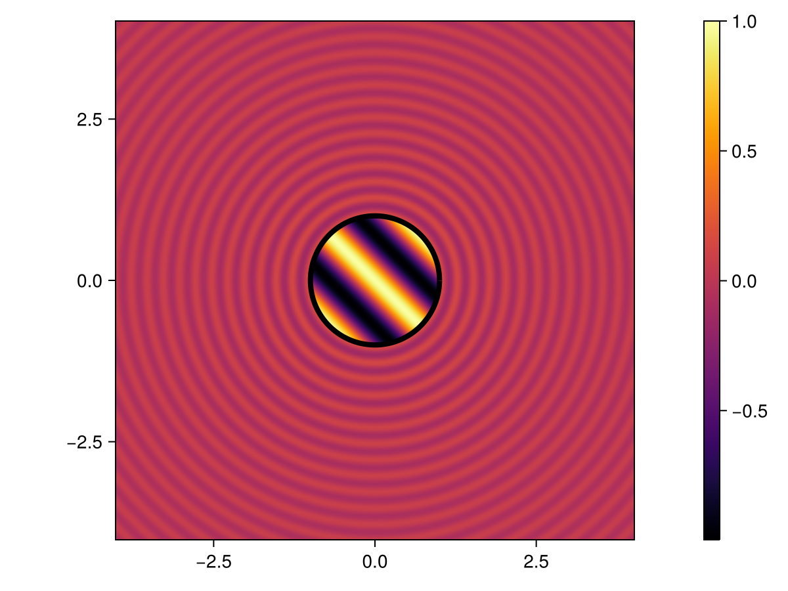

In this tutorial we will show how to solve an acoustic transmission problem in the context of Helmholtz equation in two dimensions.
using Inti
k₁ = 8π
k₂ = 2π
λ₁ = 2π / k₁
λ₂ = 2π / k₂
meshsize = min(λ₁,λ₂) / 10
qorder = 4 # quadrature order
gorder = 2 # order of geometrical approximation
using Gmsh # this will trigger the loading of Inti's Gmsh extension
function gmsh_circle(; name, meshsize, order = 1, radius = 1, center = (0, 0))
try
gmsh.initialize()
gmsh.model.add("circle-mesh")
gmsh.option.setNumber("Mesh.MeshSizeMax", meshsize)
gmsh.option.setNumber("Mesh.MeshSizeMin", meshsize)
gmsh.model.occ.addDisk(center[1], center[2], 0, radius, radius)
gmsh.model.occ.synchronize()
gmsh.model.mesh.generate(1)
gmsh.model.mesh.setOrder(order)
gmsh.write(name)
finally
gmsh.finalize()
end
end
name = joinpath(@__DIR__, "circle.msh")
gmsh_circle(; meshsize, order = gorder, name)
Ω, msh = Inti.import_mesh_from_gmsh_file(name; dim = 2)
Γ = Inti.boundary(Ω)
Γ_msh = view(msh,Γ)
Q = Inti.Quadrature(Γ_msh; qorder)
pde₁ = Inti.Helmholtz(; k=k₁, dim = 2)
pde₂ = Inti.Helmholtz(; k=k₂, dim = 2)
using FMMLIB2D
S₁, D₁ = Inti.single_double_layer(;
pde=pde₁,
target = Q,
source = Q,
compression = (method = :fmm,tol=:1e-8),
correction = (method = :dim, maxdist = 5 * meshsize),
)
K₁, N₁ = Inti.adj_double_layer_hypersingular(;
pde=pde₁,
target = Q,
source = Q,
compression = (method = :fmm,tol=:1e-8),
correction = (method = :dim, maxdist = 5 * meshsize),
)
S₂, D₂ = Inti.single_double_layer(;
pde=pde₂,
target = Q,
source = Q,
compression = (method = :fmm,tol=:1e-8),
correction = (method = :dim, maxdist = 5 * meshsize),
)
K₂, N₂ = Inti.adj_double_layer_hypersingular(;
pde=pde₂,
target = Q,
source = Q,
compression = (method = :fmm,tol=:1e-8),
correction = (method = :dim, maxdist = 5 * meshsize),
)
using LinearAlgebra
using LinearMaps
L =[I+LinearMap(D₁)-LinearMap(D₂) -LinearMap(S₁)+LinearMap(S₂);LinearMap(N₁)-LinearMap(N₂) I-LinearMap(K₁)+LinearMap(K₂)]
θ = π/4; 𝐝 = [cos(θ),sin(θ)]
u₂ = x -> exp(im * k₂ * dot(x,𝐝)) # plane-wave incident field
∇u₂ = x -> im*k₂*u₂(x)*𝐝 # gradient of incident field
using SpecialFunctions
u₁ = x -> hankelh1(0,k₁*sqrt(dot(x,x))) # point source in the interior of the circle
∇u₁ = x -> -k₁*hankelh1(1,k₁*sqrt(dot(x,x)))*x/sqrt(dot(x,x)) # gradient of the point source field
rhs₁ = map(Q) do q
x = q.coords
return u₁(x)+u₂(x)
end
rhs₂ = map(Q) do q
x = q.coords
n = q.normal
return dot(n,∇u₁(x)+∇u₂(x))
end
rhs = [rhs₁;rhs₂]
using IterativeSolvers
sol, hist =
gmres(L, rhs; log = true, abstol = 1e-6, verbose = false, restart = 400, maxiter = 400)
@show histConverged after 46 iterations.sol = L \ rhs
nQ = size(Q,1)
sol = reshape(sol,nQ,2)
φ,ψ = sol[:,1],sol[:,2]
𝒮₁, 𝒟₁ = Inti.single_double_layer_potential(; pde=pde₁, source = Q)
𝒮₂, 𝒟₂ = Inti.single_double_layer_potential(; pde=pde₂, source = Q)
v₁ = x -> 𝒟₁[φ](x) - 𝒮₁[ψ](x)
v₂ = x -> -𝒟₂[φ](x) + 𝒮₂[ψ](x)#16 (generic function with 1 method)Here is the maximum error on some points located on a circle of radius 2:
er₁ = maximum(0:0.01:2π) do θ
R = 2.0
x = (R * cos(θ), R * sin(θ))
xp = [R * cos(θ), R * sin(θ)]
return abs(v₁(x) - u₁(xp))
end
@info "maximum error = $er₁"[ Info: maximum error = 2.105411760835214e-8Here is the maximum error on some points located on a circle of radius 0.5:
er₂ = maximum(0:0.01:2π) do θ
R = 0.5
x = (R * cos(θ), R * sin(θ))
xp = [R * cos(θ), R * sin(θ)]
return abs(v₂(x) - u₂(xp))
end
@info "maximum error = $er₂"
using CairoMakie
xx = yy = range(-4; stop = 4, length = 200)
vals = map(pt -> norm(pt) > 1 ? real(u₁(pt)) : real(u₂(pt)), Iterators.product(xx, yy))
fig, ax, hm = heatmap(
xx,
yy,
vals;
colormap = :inferno,
interpolate = true,
axis = (aspect = DataAspect(), xgridvisible = false, ygridvisible = false),
)
lines!(
ax,
[cos(θ) for θ in 0:0.01:2π],
[sin(θ) for θ in 0:0.01:2π];
color = :black,
linewidth = 4,
)
Colorbar(fig[1, 2], hm)
fig
function gmshkite(; radius = 1, center = (0,0,0), npts = ceil(Int,radius10)) f = (s) -> center .+ radius . (cospi(2 * s[1]) + 0.65 * cospi(4 * s[1]) - 0.65, 1.5 * sinpi(2 * s[1])) pttags = Int32[] for i in 0:npts-1 s = i / npts x = center[1] + radius * (cospi(2 * s[1]) + 0.65 * cospi(4 * s[1]) - 0.65) y = center[2] + radius * (1.5 * sinpi(2 * s[1])) z = 0 t = gmsh.model.occ.addPoint(x,y,z) push!(pttags,t) end # close the curve by adding the first point again push!(pttags,pttags[1]) gmsh.model.occ.addSpline(pttags, 1000) gmsh.model.occ.synchronize() end
This page was generated using Literate.jl.